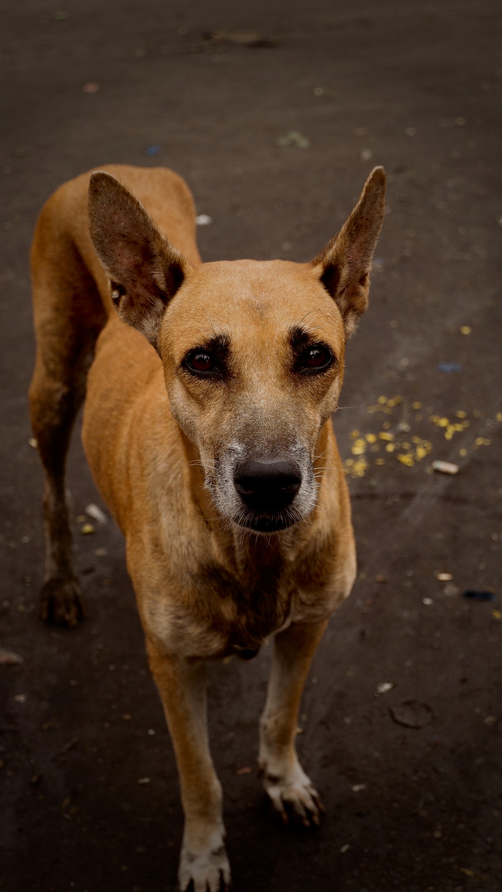
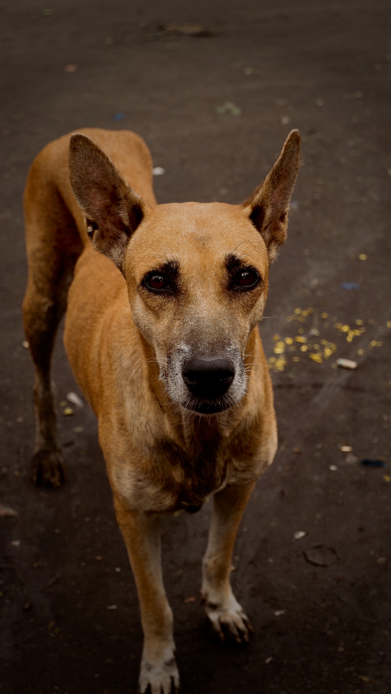
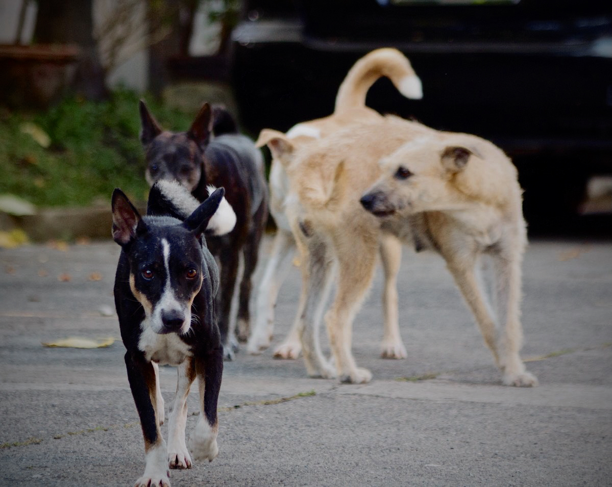
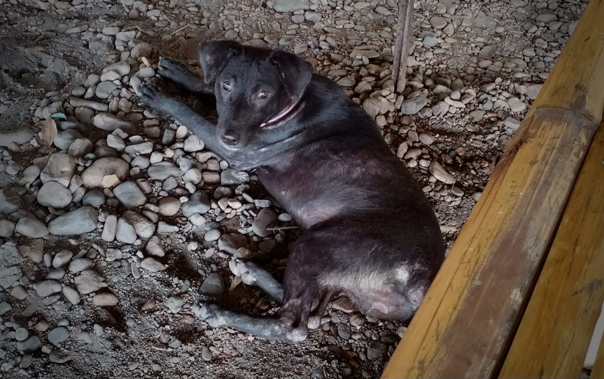
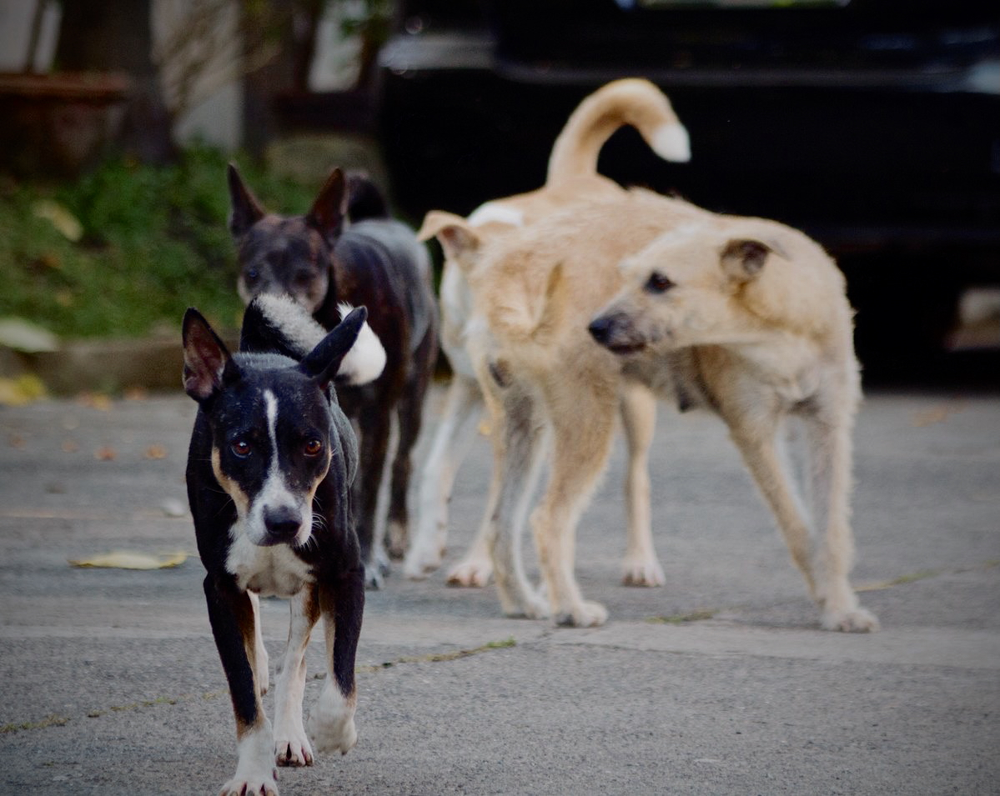
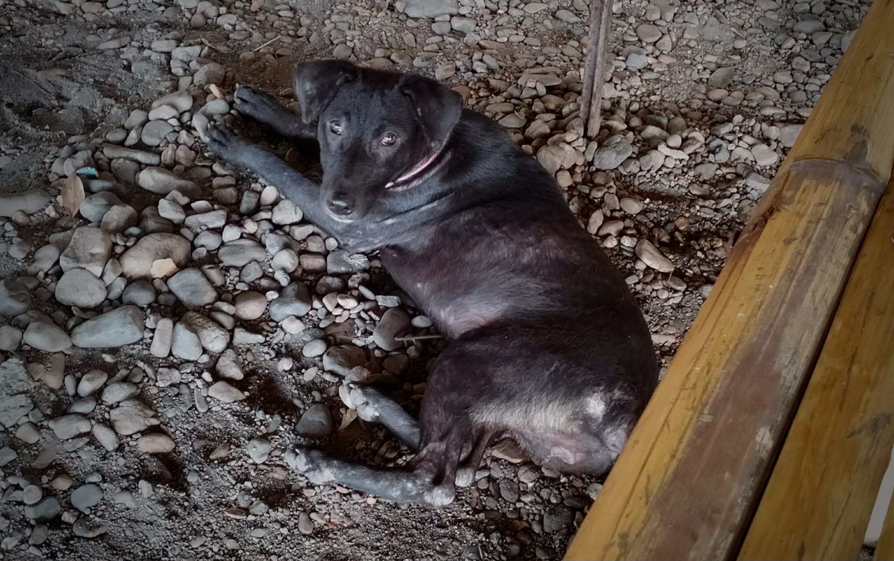

PAWsitive
Is a project created by four proud Herons from the University of Makati. We were inspired to start this heartfelt initiative because of how close animals are in our hearts. We often see them on the streets hurt, hungry, and helpless, and instead of just feeling sad, we decided to do something about it, even in the smallest way. Our goal is simple: to help stray dogs and cats ease their starvation, protect them from harm, and find their forever homes.
 


